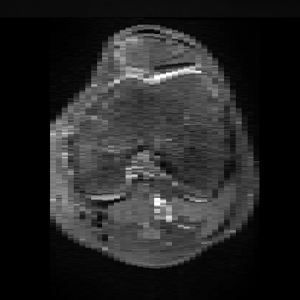
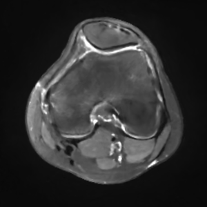

If the viewer doesn't show, ensure you use safari or chrome. You can orient the Mesh with your mouse. Zoom in for better details. The visualization shows both meshes: The super resolved mesh before and after step 3. Blue arrows indicate where bone should be removed, red arrows indicate where bone should be added.


Note that it's the same patient as in the visualization above.
Note that it's the same patient as in the visualization above.
Note that it's the same patient as in the visualization above. With marching cubes we compute the mesh and can compute the visualization that is shown above.
To treat Trochlear Dysplasia (TD), current approaches rely mainly on low-resolution clinical Magnetic Resonance (MR) scans and surgical intuition. The surgeries are planned based on surgeons experience, have limited adoption of minimally invasive techniques, and lead to inconsistent outcomes. We propose a pipeline that generates superresolved, patient-specific 3D pseudo-healthy target morphologies from conventional clinical MR scans. First, we compute an isotropic superresolved MR volume using an Implicit Neural Representation (INR). Next, we segment femur, tibia, patella, and fibula with a multi-label custom-trained network. Finally, we train a Wavelet Diffusion Model (WDM) to generate pseudo-healthy target morphologies of the trochlear region. In contrast to prior work producing pseudo-healthy low-resolution 3D MR images, our approach enables the generation of sub-millimeter resolved 3D shapes compatible for pre- and intraoperative use. These can serve as preoperative blueprints for reshaping the femoral groove while preserving the native patella articulation. Furthermore, and in contrast to other work, we do not require a CT for our pipeline - reducing the amount of radiation. We evaluated our approach on 25 TD patients and could show that our target morphologies significantly improve the sulcus angle (SA) and trochlear groove depth (TGD).
@article{wehrli2025towards,
title={Towards MR-Based Trochleoplasty Planning},
author={Wehrli, Michael and Durrer, Alicia and Friedrich, Paul and Hadramy, Sidaty El and Li, Edwin and Brahaj, Luana and Hasler, Carol C and Cattin, Philippe C},
journal={arXiv preprint arXiv:2508.06076},
year={2025}
}